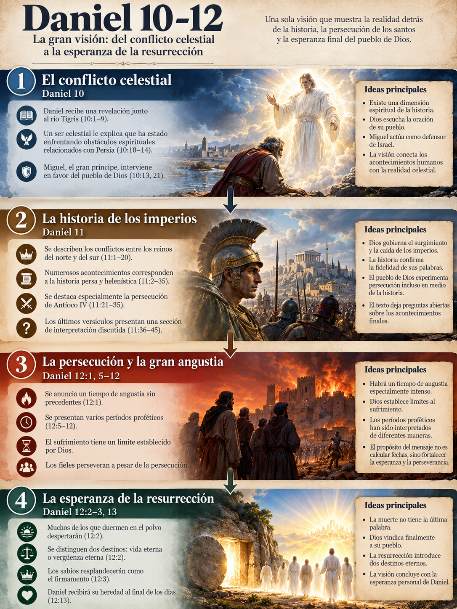
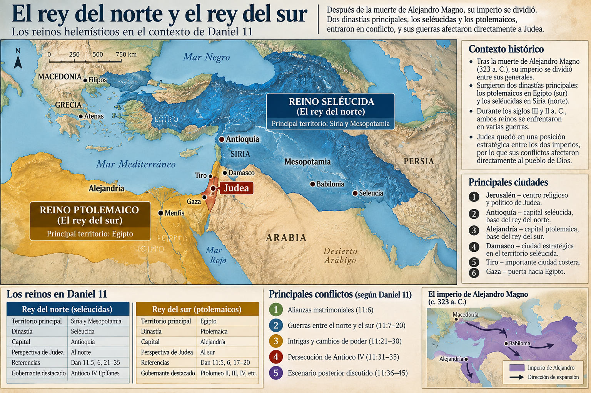
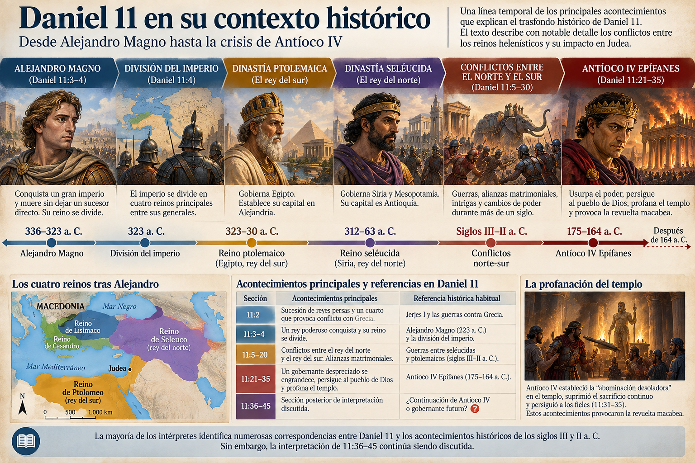
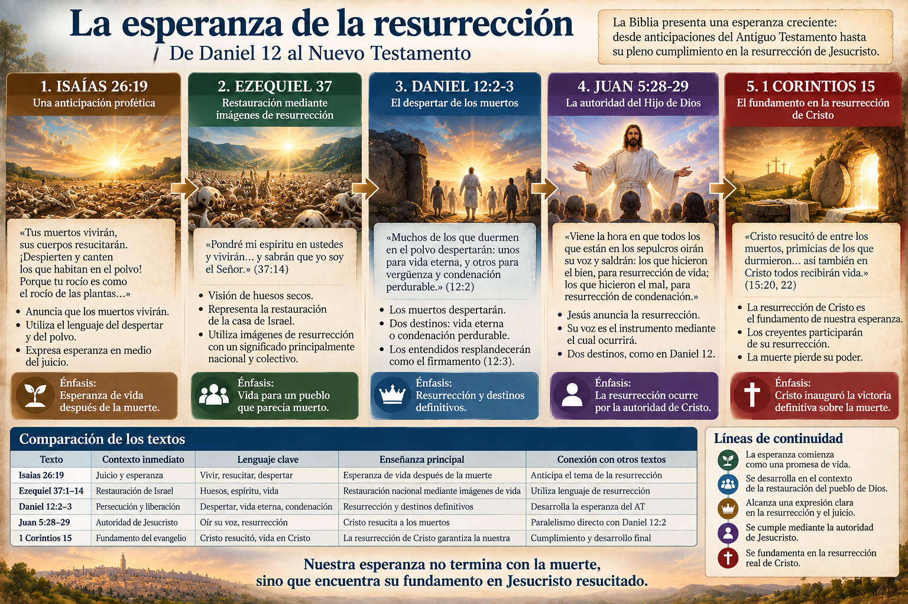
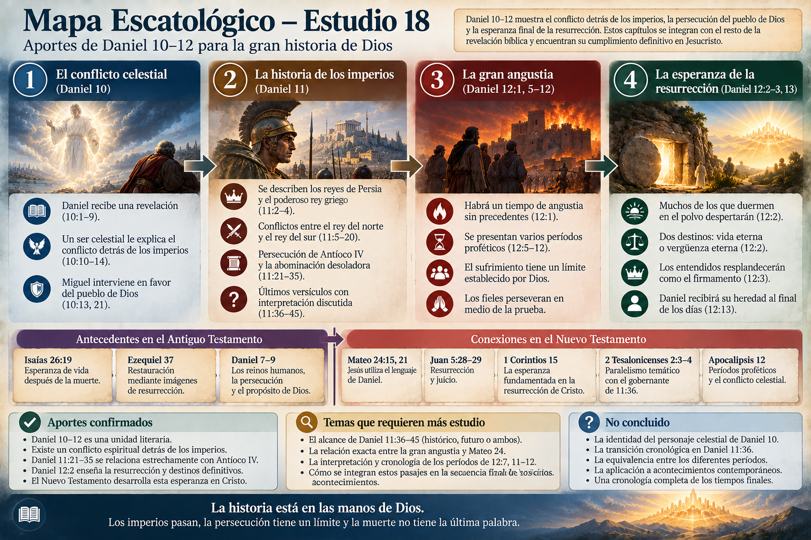

Daniel 10–12 constituye la última gran visión del libro. También contiene algunos de sus pasajes más complejos y discutidos.
En estos capítulos encontramos ángeles que intervienen en los acontecimientos humanos, enfrentamientos entre imperios, un gobernante que persigue al pueblo de Dios, una angustia sin precedentes y una promesa extraordinaria: los muertos despertarán.
Sin embargo, existe una dificultad interpretativa importante. Una parte considerable de la visión parece corresponder a acontecimientos relacionados con el Imperio persa, Alejandro Magno y los reinos helenísticos. Otras declaraciones parecen extenderse hasta la consumación definitiva de la historia.
¿Estamos ante una profecía cumplida en el siglo II a. C.? ¿Ante acontecimientos todavía futuros? ¿O ante una visión que relaciona una crisis histórica concreta con la esperanza escatológica definitiva?
No resolveremos estas preguntas imponiendo previamente un sistema escatológico.
Seguiremos nuestro método habitual: primero el texto, después su contexto, sus antecedentes bíblicos, sus posibles cumplimientos históricos y, finalmente, su relación con Cristo y el Nuevo Testamento.
1. El lugar de Daniel 10–12 dentro del libro
1.1. Una sola visión dividida en tres capítulos
Aunque nuestras Biblias presentan tres capítulos diferentes, Daniel 10–12 forma una unidad literaria.
Cada capítulo cumple una función específica.
El mundo invisible
Daniel recibe una revelación. Un mensajero celestial le explica que existen conflictos espirituales relacionados con los reinos humanos.
El conflicto de los imperios
Se anuncia una sucesión de guerras, intrigas políticas, persecuciones religiosas y conflictos que afectan directamente al pueblo de Dios.
La liberación y la resurrección
La visión alcanza su punto culminante: una gran angustia, la intervención de Miguel, la liberación del pueblo y el despertar de los muertos.
Esta estructura revela un movimiento teológico importante.
La visión comienza mostrando que la historia humana no constituye toda la realidad. Continúa describiendo los conflictos políticos que experimentará el pueblo de Dios y culmina anunciando que la muerte no tendrá la última palabra.

1.2. Su relación con las visiones anteriores
Recordemos lo que hemos estudiado.
| Pasaje | Tema principal |
|---|---|
| Daniel 2 | Los reinos humanos y el reino establecido por Dios |
| Daniel 7 | Las cuatro bestias, el juicio celestial y el reino |
| Daniel 8 | El carnero, el macho cabrío y la persecución del santuario |
| Daniel 9 | Las setenta semanas y el propósito de Dios para Jerusalén |
| Daniel 10–12 | El conflicto final de la visión, la liberación y la resurrección |
Existe una continuidad temática evidente.
Los imperios aparecen, ejercen su poder y finalmente desaparecen. El pueblo de Dios experimenta sufrimiento, pero la historia permanece bajo la soberanía divina.
Sin embargo, Daniel 12 introduce una dimensión que las visiones anteriores no habían desarrollado con tanta claridad: la resurrección individual.
Esto será fundamental para comprender la esperanza escatológica bíblica.
2. Daniel 10: el conflicto detrás de la historia
2.1. El contexto histórico de la visión
Daniel 10:1 sitúa la revelación en el tercer año de Ciro, rey de Persia.
Según la cronología histórica habitual, esto corresponde aproximadamente al año 536/535 a. C.
El Imperio babilónico había caído y Persia gobernaba buena parte del antiguo Cercano Oriente.
El decreto de Ciro había permitido el regreso de los judíos y la reconstrucción del templo, según Esdras 1.
Sin embargo, el regreso del exilio no significaba que todas las promesas proféticas se hubieran cumplido.
Jerusalén continuaba enfrentando dificultades y el pueblo seguía viviendo bajo la autoridad de un imperio extranjero.
Esta situación ayuda a comprender por qué Daniel recibe una revelación relacionada con nuevos conflictos.
2.2. Las tres semanas de duelo
Daniel 10:2–3 describe tres semanas durante las cuales Daniel guarda duelo y se abstiene de ciertos alimentos y cuidados personales.
El texto no explica expresamente la causa de su tristeza.
Es posible que estuviera preocupado por las condiciones del pueblo que había regresado del exilio o por las revelaciones anteriores.
Sin embargo, debemos evitar convertir esa posibilidad en una afirmación bíblica.
2.3. La aparición del personaje celestial
Daniel 10:4–6 describe una figura extraordinaria.
Sus características incluyen:
- Vestiduras de lino.
- Un cinturón de oro.
- Un cuerpo semejante al berilo.
- Un rostro semejante al relámpago.
- Ojos como antorchas encendidas.
- Brazos y pies semejantes al bronce bruñido.
- Una voz comparable al estruendo de una multitud.
La descripción recuerda otros encuentros con la gloria divina.
Especialmente relevantes son Ezequiel 1 y Apocalipsis 1:12–16.
En Apocalipsis, Juan contempla al Cristo glorificado mediante imágenes que recuerdan algunos elementos de Daniel 10.
Esto plantea una pregunta: ¿Daniel vio una manifestación anticipada de Cristo?
Una manifestación divina o cristofanía
Algunos intérpretes cristianos identifican al personaje de Daniel 10:5–6 con el Hijo eterno de Dios.
Señalan las semejanzas con Apocalipsis 1 y la majestuosidad de la descripción.
Un ángel glorioso
Otros consideran que se trata de un mensajero celestial cuya apariencia refleja la gloria de Dios.
Diferentes personajes celestiales
Una posibilidad es que Daniel contemple inicialmente una manifestación majestuosa y posteriormente sea atendido por otro mensajero.
La semejanza entre dos descripciones bíblicas no demuestra necesariamente que ambas representen al mismo personaje.
El género apocalíptico utiliza imágenes compartidas para comunicar gloria, autoridad y procedencia celestial.
3. El príncipe de Persia y la batalla celestial
Daniel 10:12–13 contiene una de las declaraciones más sorprendentes del libro.
El mensajero explica que, desde el primer día en que Daniel comenzó a buscar entendimiento, sus palabras fueron escuchadas.
Sin embargo, encontró oposición durante veintiún días por parte del príncipe del reino de Persia.
Finalmente, Miguel acudió en su ayuda.
3.1. ¿Quién es el príncipe de Persia?
El término hebreo utilizado es sar (שַׂר), que puede referirse a un príncipe, gobernante o jefe.
Su significado exacto depende del contexto.
Aquí encontramos un personaje capaz de oponerse a un mensajero celestial.
Además, Miguel aparece como uno de los principales príncipes.
Por estas razones, muchos intérpretes consideran que el príncipe de Persia es un poder espiritual relacionado con el imperio.
Esta lectura resulta contextualmente sólida.
No parece tratarse simplemente de un gobernante humano, aunque el texto tampoco desarrolla una doctrina completa sobre las jerarquías espirituales.
3.2. ¿Los imperios tienen poderes espirituales asociados?
Daniel 10:20 menciona también al príncipe de Grecia.
La asociación entre ambos personajes y los imperios que protagonizan la visión es evidente.
El texto parece presentar una dimensión espiritual de los conflictos históricos.
Sin embargo, debemos distinguir entre lo que afirma y las conclusiones que podríamos construir.
Afirmación textual
Existe oposición celestial relacionada con Persia y Grecia, y Miguel interviene en favor del pueblo de Daniel.
Límite interpretativo
No establece cuántos poderes espirituales existen, cómo se distribuyen territorialmente ni cuáles son sus mecanismos exactos de influencia política. Tampoco identifica a los príncipes con demonios concretos por nombre.
3.3. ¿Qué significa que Miguel ayude al mensajero?
Daniel 10:13 presenta a Miguel como uno de los principales príncipes.
Posteriormente, Daniel 10:21 lo describe como el príncipe relacionado con el pueblo de Daniel.
Daniel 12:1 volverá a mencionarlo en el contexto de la gran angustia y la liberación.
En el Nuevo Testamento, Judas 9 identifica a Miguel como arcángel, mientras que Apocalipsis 12:7 describe a Miguel y sus ángeles combatiendo contra el dragón.
Estas conexiones son importantes, aunque no debemos asumir automáticamente que ambos pasajes describen exactamente el mismo acontecimiento.
Miguel y el conflicto celestial
Miguel interviene en el conflicto celestial y aparece relacionado con el pueblo de Daniel.
Miguel y la gran angustia
Miguel se levanta durante un tiempo de angustia extraordinaria.
Miguel, arcángel
Miguel es identificado como arcángel.
Miguel y sus ángeles
Miguel y sus ángeles combaten contra el dragón y sus ángeles.
3.4. Una enseñanza sobre la oración
Existe otro detalle fundamental.
Daniel había comenzado a orar antes de recibir la respuesta.
El mensajero explica que su petición fue escuchada desde el primer día.
Esto muestra que la demora experimentada por Daniel no significaba que Dios hubiera ignorado su oración.
Sin embargo, el pasaje no permite establecer una regla universal según la cual toda oración demorada se debe a un enfrentamiento entre ángeles y demonios.
El relato describe una situación particular dentro de una revelación apocalíptica.
4. Daniel 11: la historia de los imperios
Daniel 11 desarrolla el contenido histórico de la visión.
Es uno de los capítulos proféticos más detallados del Antiguo Testamento.
Su interpretación requiere conocer el período persa, las conquistas de Alejandro Magno y los conflictos entre los reinos helenísticos.
4.1. Los reyes de Persia y el poderoso rey griego
Daniel 11:2 anuncia una sucesión de reyes persas y menciona a un cuarto que acumulará grandes riquezas y provocará un conflicto contra Grecia.
La identificación habitual del cuarto rey es Jerjes I, conocido por su campaña contra Grecia.
Sin embargo, existen diferencias respecto de qué reyes deben contarse para llegar a él.
Daniel 11:3 describe posteriormente a un rey poderoso que gobernará con gran dominio.
La identificación histórica más extendida es Alejandro Magno.
Daniel 11:4 anuncia que su reino será dividido hacia los cuatro vientos, sin permanecer en manos de sus descendientes.
Esto recuerda Daniel 8:8 y 8:21–22.
| Daniel 8 | Daniel 11 | Referencia histórica habitual |
|---|---|---|
| Carnero | Reyes persas | Imperio persa |
| Macho cabrío | Rey poderoso | Alejandro Magno |
| Gran cuerno quebrado | Reino dividido | Muerte de Alejandro |
| Cuatro cuernos | División hacia los cuatro vientos | Reinos sucesores |
Debemos recordar que el texto de Daniel 11 no menciona a Alejandro por su nombre.
Su identificación procede de la comparación entre las visiones y los acontecimientos históricos.
4.2. El rey del norte y el rey del sur
A partir de Daniel 11:5 aparece una sucesión de conflictos entre dos grandes poderes.
El rey del sur se identifica habitualmente con la dinastía ptolemaica de Egipto.
El rey del norte se relaciona con la dinastía seléucida, que gobernaba Siria y otros territorios.
Estas denominaciones tienen sentido geográfico desde la perspectiva de Judea.
Judea se encontraba en una posición estratégica entre ambos reinos.
Por eso, los enfrentamientos entre estas dinastías tuvieron consecuencias directas para Jerusalén y el templo.

Daniel 11 menciona alianzas matrimoniales, campañas militares, traiciones, victorias y derrotas.
La mayoría de los intérpretes identifica numerosas correspondencias con los acontecimientos de los siglos III y II a. C.
Un ejemplo: Daniel 11:6
El texto menciona una alianza matrimonial entre el rey del norte y el rey del sur.
Habitualmente se relaciona con el matrimonio de Berenice, hija de Ptolomeo II, con Antíoco II.
La alianza fracasó y desembocó en nuevos conflictos dinásticos.
Esta correspondencia constituye uno de los ejemplos más conocidos de la relación entre Daniel 11 y la historia helenística.
No obstante, el hecho de identificar acontecimientos históricos no resuelve por sí mismo la cuestión de cuándo fue redactada la profecía.
Esa es una discusión histórica y literaria diferente.
5. Daniel 11:21–35 y Antíoco IV Epífanes
Llegamos a una sección especialmente importante.
Daniel 11:21 describe la aparición de un personaje despreciado que obtiene el reino mediante intrigas.
Las características posteriores incluyen:
- Manipulación política y alianzas engañosas.
- Campañas militares contra Egipto.
- Hostilidad hacia el pacto santo.
- Intervención contra el santuario.
- Supresión del sacrificio continuo.
- Establecimiento de una abominación desoladora.
- Persecución de quienes permanecen fieles a Dios.
Estas características presentan correspondencias históricas muy significativas con Antíoco IV Epífanes.
5.1. ¿Quién fue Antíoco IV?
Antíoco IV Epífanes gobernó el Imperio seléucida aproximadamente entre 175 y 164 a. C.
Durante su reinado, Judea experimentó graves conflictos políticos y religiosos.
Sus intervenciones contra las prácticas religiosas judías y la profanación del templo provocaron una crisis extraordinaria.
Los libros de 1 y 2 Macabeos proporcionan información histórica importante sobre este período.
Aunque las tradiciones cristianas difieren respecto del lugar de estos libros en el canon bíblico, pueden consultarse como fuentes históricas antiguas.
5.2. La abominación desoladora
Daniel 11:31 anuncia que las fuerzas del gobernante profanarán el santuario, suprimirán el sacrificio continuo y establecerán la abominación desoladora.
Este lenguaje recuerda Daniel 8:11–13 y 9:27.
El término relacionado con la desolación comunica devastación o destrucción.
En su contexto, la expresión parece referirse a una profanación religiosa extraordinaria.
La persecución de Antíoco IV y la profanación del templo constituyen un referente histórico especialmente sólido.
Sin embargo, Mateo 24:15 demuestra que la expresión continuó teniendo importancia escatológica en las enseñanzas de Jesús.
Esto exige estudiar cuidadosamente cómo el Nuevo Testamento utiliza las profecías de Daniel.
No podemos concluir automáticamente que toda referencia posterior implique el mismo acontecimiento histórico.
5.3. Los entendidos y la persecución
Daniel 11:32–35 describe a personas que permanecen fieles a Dios durante la persecución.
Algunas resisten, otras instruyen al pueblo y algunas sufren violentamente.
El texto presenta la fidelidad en medio del sufrimiento como una característica central del pueblo de Dios.
Aquí aparece un tema que posteriormente encontraremos en el Nuevo Testamento: los santos pueden sufrir bajo poderes hostiles, pero su esperanza no depende de su capacidad para dominar políticamente a sus perseguidores.
Daniel 11:35 también introduce la idea de purificación mediante la prueba.
Esto no significa que toda persecución sea buena ni que Dios apruebe las acciones de los perseguidores.
Significa que la visión contempla la fidelidad del pueblo incluso en circunstancias adversas.

6. Daniel 11:36–45: ¿Antíoco IV o un gobernante futuro?
Esta es probablemente la sección más discutida de toda la visión.
Hasta Daniel 11:35 encontramos correspondencias históricas bastante precisas con los acontecimientos relacionados con Antíoco IV.
Pero, a partir del versículo 36, aparecen dificultades.
El texto describe a un rey que se engrandece, pronuncia cosas extraordinarias contra Dios, desprecia determinadas divinidades y participa en nuevos conflictos militares.
Su historia termina abruptamente: llega a su fin y nadie puede ayudarlo.
¿Continúa hablando de Antíoco IV o introduce a otro personaje?
6.1. Primera interpretación: la visión continúa hablando de Antíoco IV
Esta posición considera que Daniel 11:36–45 desarrolla las actividades del mismo gobernante presentado anteriormente.
Su principal argumento es la continuidad literaria.
El texto no anuncia explícitamente la aparición de otro rey en el versículo 36. Por tanto, existe una razón contextual para mantener al mismo personaje.
Sin embargo, aparece un problema histórico.
Las campañas y el final descritos en los últimos versículos no corresponden claramente con los registros disponibles sobre la muerte de Antíoco IV, que ocurrió en territorio oriental, lejos de Jerusalén.
La interpretación histórico-crítica habitual explica esta dificultad considerando que Daniel 11:40–45 refleja expectativas sobre acontecimientos que todavía no habían ocurrido cuando se compuso esta sección.
Desde esa perspectiva, la precisión de las correspondencias históricas anteriores y las dificultades de los últimos versículos ayudan a situar la composición del texto durante la crisis macabea.
Esta explicación depende, naturalmente, de una determinada reconstrucción de la historia de composición del libro.
6.2. Segunda interpretación: aparece un gobernante escatológico futuro
Numerosos intérpretes futuristas consideran que Daniel 11:36 introduce una transición desde Antíoco IV hacia un gobernante que aparecerá cerca de la consumación final.
Frecuentemente identifican a este personaje con el Anticristo.
Sus principales argumentos son las características del rey, la dificultad de identificar históricamente sus últimas campañas y la proximidad literaria entre Daniel 11 y los acontecimientos de Daniel 12.
También relacionan esta sección con 2 Tesalonicenses 2:3–4, donde Pablo describe a un personaje que se exalta a sí mismo y se opone a Dios.
Sin embargo, existen dificultades.
Daniel 11:36 no anuncia explícitamente un salto de muchos siglos. Tampoco identifica al personaje mediante el término Anticristo.
Además, las referencias geográficas a Egipto y a los conflictos entre el norte y el sur deben interpretarse coherentemente con el resto del capítulo.
Una lectura futurista necesita explicar por qué la narración pasaría de los conflictos helenísticos a un escenario escatológico sin una indicación cronológica inequívoca.
6.3. Tercera interpretación: un patrón histórico que anticipa una realidad posterior
Otra posibilidad considera que Antíoco IV constituye el referente histórico inmediato, pero que su comportamiento anticipa características de una oposición posterior contra Dios.
Esta interpretación reconoce las correspondencias históricas y, al mismo tiempo, toma en consideración el uso posterior de las imágenes de Daniel en el Nuevo Testamento.
El concepto relevante es el de patrón tipológico: un acontecimiento histórico anterior presenta características que vuelven a manifestarse posteriormente.
Sin embargo, la tipología necesita justificación textual.
No podemos convertir cualquier semejanza histórica en una profecía de doble cumplimiento.
La relación entre Daniel, las enseñanzas de Jesús y los escritos apostólicos debe examinarse cuidadosamente.
6.4. Evaluación de las interpretaciones
| Cuestión | Evaluación |
|---|---|
| Continuidad literaria entre 11:35 y 11:36 | 🟢 Muy fuerte |
| Relación histórica de 11:21–35 con Antíoco IV | 🟢 Muy fuerte |
| Identificación precisa de todos los acontecimientos de 11:36–45 | 🟠 Disputado |
| Transición explícita hacia un gobernante futuro | 🟠 Disputado |
| Existencia de un patrón de oposición a Dios reutilizado en el NT | 🟡 Probable |
| Identificación de un gobernante contemporáneo con este rey | 🔴 Especulativo |
7. Daniel 12:1: la gran angustia y la intervención de Miguel
Daniel 12 comienza con una declaración decisiva.
Miguel se levantará y habrá un tiempo de angustia extraordinaria. En ese contexto, el pueblo de Daniel será liberado: concretamente, aquellos que estén inscritos en el libro.
Este versículo reúne tres elementos fundamentales: intervención celestial, sufrimiento histórico y salvación.
7.1. ¿Qué significa que Miguel se levante?
La expresión aparece en el contexto de una crisis que afecta al pueblo de Dios.
Miguel, presentado anteriormente como príncipe relacionado con ese pueblo, interviene en un momento decisivo.
El texto no explica detalladamente cómo ocurre esa intervención.
Tampoco identifica a Miguel con Cristo.
Aunque algunas tradiciones cristianas han propuesto esa identificación, la distinción entre ambos personajes encuentra apoyo en Judas 9 y en el conjunto de la presentación neotestamentaria.
Lo que sí podemos afirmar es que la liberación del pueblo depende de la intervención divina, no simplemente de una victoria militar humana.
7.2. Una angustia sin precedentes
Daniel describe un período de angustia incomparable.
Esta expresión tiene antecedentes en el lenguaje profético.
Jeremías 30:7 habla de un tiempo de angustia para Jacob, mientras que otros textos proféticos utilizan imágenes de calamidad extraordinaria para describir acontecimientos históricos y juicios divinos.
El carácter excepcional de una expresión no determina automáticamente su duración ni demuestra, por sí solo, que se refiera exclusivamente al final absoluto de la historia.
Debemos considerar el contexto completo.
En Daniel 12, la angustia aparece inmediatamente antes de la declaración sobre la resurrección.
Esto proporciona un argumento importante para interpretar el pasaje dentro de un horizonte escatológico amplio.
7.3. La relación con Mateo 24
Jesús utiliza un lenguaje muy semejante en Mateo 24:21, cuando anuncia una gran tribulación.
También menciona expresamente a Daniel en Mateo 24:15.
La relación literaria es importante.
Sin embargo, Mateo 24 presenta sus propias dificultades interpretativas: contiene referencias a la destrucción del templo, acontecimientos que afectan a Judea y declaraciones relacionadas con la venida del Hijo del Hombre.
Las principales interpretaciones cristianas difieren respecto de cómo se relacionan estos acontecimientos.
Algunos consideran que Jesús utiliza Daniel principalmente para describir la crisis que culminó con la destrucción de Jerusalén en el año 70 d. C.
Otros consideran que esa crisis anticipa una tribulación escatológica posterior.
También existen interpretaciones que distinguen diferentes secciones dentro del discurso de Jesús.
Este asunto deberá estudiarse detenidamente cuando lleguemos al discurso del monte de los Olivos.
8. Daniel 12:2–3: la resurrección de los muertos
Daniel 12:2 anuncia que muchos de los que duermen en el polvo despertarán: unos para vida eterna y otros para vergüenza y condenación perdurable.Daniel 12:2 — idea central del pasaje
El versículo 3 describe a los entendidos resplandeciendo como el firmamento y a quienes enseñaron justicia, como las estrellas.
Estos versículos constituyen uno de los testimonios más explícitos sobre la resurrección y el destino definitivo de los seres humanos en el Antiguo Testamento.
Su importancia para la escatología cristiana es extraordinaria.
8.1. El significado de despertar del polvo
Daniel utiliza el lenguaje del sueño para referirse a quienes han muerto.
El polvo recuerda la condición mortal del ser humano y su retorno a la tierra.
Génesis 3:19 constituye un antecedente importante.
Sin embargo, Daniel anuncia que esa condición no será definitiva.
Los muertos despertarán.
En este contexto, la referencia al polvo, al despertar y a los destinos definitivos proporciona argumentos especialmente sólidos para interpretar el pasaje como una declaración sobre la resurrección.
8.2. ¿Qué significa que resucitarán muchos?
El texto hebreo utiliza rabbim (רַבִּים), que significa «muchos».
Surge una pregunta importante: ¿Daniel enseña una resurrección universal o solamente la resurrección de un grupo determinado?
La palabra «muchos» no significa necesariamente «todos», pero tampoco exige interpretar que otros muertos quedarán excluidos.
El contexto destaca dos destinos contrapuestos.
El propósito principal del pasaje parece ser anunciar que la muerte no impedirá ni la vindicación de los fieles ni el juicio de los impíos.
No debemos construir una doctrina completa sobre el número de resucitados utilizando exclusivamente esta palabra.
El Nuevo Testamento proporciona declaraciones adicionales sobre el alcance de la resurrección.
8.3. Dos destinos definitivos
Daniel 12:2 distingue entre quienes despiertan para vida eterna y quienes despiertan para vergüenza y condenación perdurable.
Aquí aparece una oposición entre dos destinos que trascienden la muerte.
Esto representa un desarrollo notable de la esperanza bíblica.
La justicia divina no queda limitada a lo que sucede durante la vida presente.
Los perseguidores pueden alcanzar poder temporalmente, y los fieles pueden morir sin experimentar liberación histórica. Pero el juicio de Dios no termina con la muerte.
Esta verdad responde directamente al problema planteado por las persecuciones descritas en Daniel 11.
8.4. Los antecedentes en Isaías y Ezequiel
Isaías 26:19 anuncia que los muertos vivirán y utiliza imágenes relacionadas con el despertar y el polvo.
Existe una correspondencia conceptual importante con Daniel 12:2.
Ezequiel 37 presenta la conocida visión de los huesos secos.
Sin embargo, su interpretación requiere una distinción fundamental.
En Ezequiel 37:11–14, Dios explica que los huesos representan a la casa de Israel. La visión anuncia la restauración de un pueblo que se considera completamente destruido.
Por tanto, su significado inmediato es nacional y colectivo.
Esto no impide reconocer que sus imágenes participan del desarrollo bíblico de la esperanza en el poder vivificador de Dios.
Pero sería incorrecto afirmar que Ezequiel 37 enseña exactamente lo mismo que Daniel 12.
| Texto | Énfasis principal |
|---|---|
| Isaías 26:19 | Esperanza expresada mediante el despertar de los muertos |
| Ezequiel 37 | Restauración nacional mediante imágenes de resurrección |
| Daniel 12:2 | Despertar de los muertos y destinos contrapuestos |
| Juan 5:28–29 | Resurrección para vida y para juicio |
| 1 Corintios 15 | Resurrección de Cristo y de quienes le pertenecen |
8.5. La relación con Juan 5:28–29
Jesús anuncia que llegará una hora en la cual quienes están en los sepulcros oirán su voz y saldrán.
Distingue entre una resurrección para vida y otra para condenación.
La correspondencia con Daniel 12:2 es extraordinariamente estrecha.
En ambos pasajes encontramos muertos que despiertan y dos destinos diferentes.
La novedad fundamental del Evangelio de Juan consiste en que Jesús presenta su propia voz como el instrumento mediante el cual ocurrirá la resurrección.
La esperanza anunciada en Daniel adquiere así una dimensión explícitamente cristológica.
El Hijo posee autoridad para dar vida y ejecutar juicio.
8.6. La relación con 1 Corintios 15
Pablo presenta la resurrección de Cristo como el fundamento de la esperanza futura de los creyentes.
Su argumento es inseparable de la resurrección corporal de Jesús.
Si Cristo no resucitó, la esperanza cristiana queda vacía.
Pero Pablo afirma que Cristo resucitó y que quienes le pertenecen participarán de su victoria sobre la muerte.
Daniel anuncia que la muerte no será definitiva.
El Nuevo Testamento proclama que esa esperanza tiene su fundamento decisivo en Jesucristo resucitado.
Esto no significa que Daniel comprendiera explícitamente todos los detalles revelados posteriormente por los apóstoles.
Significa que la revelación neotestamentaria desarrolla y profundiza una esperanza ya presente en el Antiguo Testamento.

9. Daniel 12:4: el libro sellado hasta el tiempo del fin
Después de anunciar la resurrección, el mensajero ordena a Daniel cerrar y sellar las palabras del libro hasta el tiempo del fin.
La expresión ha provocado numerosas interpretaciones.
9.1. ¿Qué significa sellar el libro?
En el mundo antiguo, un documento sellado podía quedar protegido, autenticado o reservado para una ocasión determinada.
Dentro de Daniel, la orden parece relacionarse con la preservación de la revelación hasta el momento establecido.
No significa necesariamente que nadie pudiera comprender ninguna parte de la profecía antes de una fecha determinada.
Tampoco implica que su significado solo pudiera descubrirse mediante acontecimientos tecnológicos modernos.
9.2. ¿Qué significa que aumentará el conocimiento?
Daniel 12:4 contiene una expresión que suele relacionarse con personas que recorren de un lado a otro y con un aumento del conocimiento.
Existen diferencias de traducción e interpretación.
Una lectura entiende que las personas recorrerán la tierra y que aumentará el conocimiento general.
Otra considera que muchos examinarán la revelación y que aumentará el conocimiento relacionado con ella.
El contexto inmediato favorece tomar seriamente esta segunda posibilidad, porque el versículo habla de las palabras del libro y de su preservación.
Sin embargo, no existe unanimidad respecto de la traducción exacta.
10. Daniel 12:5–12: los períodos proféticos
La parte final de la visión introduce varias expresiones temporales que han producido interpretaciones muy diferentes.
Daniel escucha una pregunta: ¿cuándo terminarán estas maravillas?
La respuesta incluye tres períodos que debemos examinar por separado.
10.1. Un tiempo, tiempos y medio tiempo
Daniel 12:7 utiliza una expresión que recuerda Daniel 7:25.
En Daniel 7, el período está relacionado con la persecución ejercida contra los santos.
La interpretación más habitual entiende que representa tres tiempos y medio.
Si cada tiempo se interpreta como un año, el resultado sería aproximadamente tres años y medio.
Sin embargo, el texto no define expresamente la duración de cada tiempo.
También es posible que el número tenga un significado simbólico relacionado con un período limitado de sufrimiento.
La mitad de siete puede sugerir una duración incompleta, aunque esa interpretación requiere argumentación y no debe asumirse automáticamente.
En Apocalipsis encontramos períodos relacionados: cuarenta y dos meses y 1.260 días.
La correspondencia numérica resulta significativa cuando se utiliza un año esquemático de 360 días.
No obstante, esa correspondencia no demuestra por sí sola que todos los pasajes describan exactamente el mismo acontecimiento.
10.2. Los 1.290 días
Daniel 12:11 relaciona este período con la supresión del sacrificio continuo y el establecimiento de la abominación desoladora.
La conexión con Daniel 11:31 es evidente.
Existen diferentes propuestas interpretativas.
Una interpretación histórica relaciona el período con los acontecimientos de la persecución de Antíoco IV y la posterior purificación del templo.
Una interpretación futurista considera que corresponde a una persecución escatológica todavía futura.
Otras interpretaciones proponen que el período posee una dimensión simbólica.
El problema es que las fechas históricas disponibles no permiten establecer una correspondencia universalmente aceptada que explique todos los detalles.
Tampoco existe una declaración bíblica que permita identificar con certeza su comienzo en una fecha contemporánea.
10.3. Los 1.335 días
Daniel 12:12 declara bienaventurado a quien espere y llegue hasta los 1.335 días.
Este período supera en cuarenta y cinco días al anterior.
El texto no explica expresamente qué ocurre durante esos días adicionales.
Algunas interpretaciones futuristas proponen que representan una transición entre la derrota de un gobernante escatológico y el establecimiento del reino.
Otras lecturas relacionan el período con la perseverancia de los fieles durante una persecución histórica.
También existen propuestas simbólicas.
Sin embargo, ninguna de estas explicaciones está formulada explícitamente en el pasaje.
Evaluación de los períodos
11. Daniel 12:13: la promesa personal a Daniel
El libro concluye con una declaración dirigida personalmente a Daniel.
Se le anuncia que descansará y que se levantará para recibir su heredad al final de los días.
Esta conclusión es especialmente importante.
Daniel había recibido revelaciones sobre imperios, guerras, persecuciones y acontecimientos extraordinarios.
Sin embargo, la última palabra no está dedicada a un imperio ni a un gobernante perseguidor.
Está dedicada a la esperanza de Daniel.
El profeta morirá, pero su historia no terminará con la muerte.
La expresión relacionada con levantarse puede entenderse dentro del contexto inmediato de la resurrección anunciada en Daniel 12:2.
La promesa de recibir su heredad refuerza esa esperanza.
El centro de la visión no es simplemente conocer lo que sucederá, sino permanecer fiel a Dios y participar finalmente de su salvación.
12. Las principales interpretaciones cristianas de Daniel 10–12
Conviene aclarar que las posiciones que examinaremos no siempre constituyen sistemas mutuamente excluyentes.
El preterismo y el futurismo se relacionan principalmente con el cumplimiento de las profecías. El premilenialismo, el amilenialismo y el postmilenialismo se relacionan principalmente con la interpretación del milenio de Apocalipsis 20.
Por tanto, un cristiano puede adoptar una interpretación histórica de buena parte de Daniel y mantener diferentes posiciones respecto del milenio.
12.1. Interpretación histórica centrada en Antíoco IV
Esta lectura considera que los acontecimientos descritos en Daniel 11 encuentran su referente principal en los conflictos helenísticos.
Su principal fortaleza exegética es la continuidad histórica y literaria entre las diferentes secciones del capítulo.
12.2. Interpretación futurista
Esta lectura reconoce generalmente las referencias históricas anteriores, pero considera que la visión alcanza una dimensión futura relacionada con un gobernante escatológico, una gran tribulación y la intervención definitiva de Dios.
Su principal argumento procede de las dificultades históricas de Daniel 11:36–45 y de las conexiones con el Nuevo Testamento.
12.3. Interpretación histórico-tipológica
Esta posición considera que los acontecimientos relacionados con Antíoco IV constituyen el referente histórico inmediato y que determinadas características de esa persecución pueden funcionar como antecedentes de acontecimientos posteriores.
Su principal argumento es la reutilización de imágenes de Daniel en el Nuevo Testamento.
12.4. ¿Qué podemos concluir?
El estudio textual permite alcanzar algunas conclusiones sólidas sin resolver anticipadamente todas las diferencias escatológicas.
La relación entre Daniel 11:21–35 y Antíoco IV está históricamente bien fundamentada.
La interpretación de Daniel 11:36–45 continúa siendo discutida.
Daniel 12 presenta explícitamente la esperanza de la resurrección y de una intervención divina que trasciende la persecución experimentada por el pueblo.
El Nuevo Testamento desarrolla esa esperanza alrededor de Jesucristo.
Por tanto, no necesitamos decidir anticipadamente entre todos los sistemas escatológicos para comprender el mensaje central de estos capítulos.
13. Daniel 10–12 y el Nuevo Testamento
Es importante reunir las conexiones que hemos identificado y distinguir su grado de solidez.
| Daniel | Nuevo Testamento | Relación |
|---|---|---|
| 10:5–6 | Apocalipsis 1:12–16 | 🟡 Imágenes semejantes de gloria celestial |
| 10:13; 12:1 | Judas 9; Apocalipsis 12:7 | 🟢 Miguel como figura celestial |
| 11:31; 12:11 | Mateo 24:15 | 🟢 Referencia explícita a Daniel |
| 11:36 | 2 Tesalonicenses 2:3–4 | 🟡 Paralelismo temático |
| 12:1 | Mateo 24:21 | 🟢 Lenguaje estrechamente relacionado |
| 12:2 | Juan 5:28–29 | 🟢 Resurrección y destinos contrapuestos |
| 12:2–3 | 1 Corintios 15 | 🟢 Esperanza compartida de resurrección |
| 12:7 | Apocalipsis 12:14 | 🟢 Expresión temporal compartida |
La tabla presenta correspondencias textuales y temáticas. No presupone que todos los pasajes relacionados describan necesariamente un mismo acontecimiento.
Especialmente importante será nuestra futura investigación de Mateo 24, 2 Tesalonicenses 2 y Apocalipsis.
Allí podremos determinar con mayor precisión cómo los autores del Nuevo Testamento utilizan las imágenes de Daniel.
14. La enseñanza teológica de la gran visión
14.1. Dios gobierna una historia que no comprendemos completamente
Daniel descubre que existen dimensiones de la realidad que no puede observar.
Los acontecimientos humanos forman parte de una historia más amplia.
Sin embargo, el texto no invita a especular sobre cada decisión política o acontecimiento internacional.
Su propósito es mostrar que Dios no ha abandonado a su pueblo.
14.2. La fidelidad puede implicar sufrimiento
Daniel 11 presenta a personas fieles que experimentan persecución e incluso la muerte.
Esto corrige una expectativa equivocada: la fidelidad a Dios no garantiza necesariamente protección frente a todo sufrimiento histórico.
La esperanza bíblica es más profunda.
Dios puede vindicar definitivamente a quienes mueren sin experimentar liberación durante su vida.
14.3. La muerte no tiene la última palabra
Daniel 12 introduce la respuesta decisiva al problema de la persecución.
Los imperios pueden quitar la vida, pero no pueden impedir la resurrección.
El Nuevo Testamento revela que esta esperanza encuentra su fundamento en la resurrección de Jesucristo.
Cristo no se limita a anunciar la victoria sobre la muerte: mediante su propia resurrección inaugura esa victoria.
14.4. El conocimiento profético debe producir perseverancia
Daniel recibe revelaciones extraordinarias, pero el libro concluye llamándolo a continuar su camino.
El propósito de la profecía no es alimentar una búsqueda interminable de fechas o identidades ocultas.
Es fortalecer la confianza en Dios y la fidelidad de su pueblo.
La esperanza escatológica cristiana se encuentra centrada en la persona y la obra de Jesucristo.
15. Conclusiones y grados de certeza
Resultados del Estudio 18
- Daniel 10–12 constituye una unidad literaria.
- La visión relaciona los conflictos históricos con la realidad celestial.
- Daniel 11 contiene numerosas correspondencias con la historia persa y helenística.
- Daniel 11:21–35 presenta correspondencias especialmente estrechas con Antíoco IV.
- Daniel 12:2 anuncia la resurrección y destinos contrapuestos.
- El Nuevo Testamento desarrolla la esperanza de la resurrección alrededor de Jesucristo.
- Los príncipes de Persia y Grecia representan poderes espirituales relacionados con esos imperios.
- Daniel 11:36 mantiene una continuidad literaria con el gobernante descrito anteriormente.
- Las imágenes de persecución de Daniel proporcionan antecedentes importantes para las enseñanzas escatológicas del Nuevo Testamento.
- La identidad definitiva del personaje celestial de Daniel 10.
- El alcance histórico y escatológico de Daniel 11:36–45.
- La relación exacta entre la gran angustia de Daniel 12 y Mateo 24.
- La interpretación cronológica de los 1.290 y 1.335 días.
- Identificar gobernantes contemporáneos con los personajes de Daniel 11.
- Utilizar Daniel 12:4 como una predicción específica de tecnologías modernas.
- Calcular fechas del regreso de Cristo a partir de los períodos proféticos.
- Describir con precisión una jerarquía mundial de poderes espirituales a partir de Daniel 10.
16. Actualización provisional del Mapa Escatológico
Incorporamos los resultados de este estudio sin modificar las conclusiones que todavía necesitan investigación.
Mapa Escatológico — Estudio 18
Nuevas aportaciones de Daniel 10–12
La resurrección y el juicio
Daniel 12:2 anuncia el despertar de los muertos y distingue dos destinos. El Nuevo Testamento desarrolla esta esperanza en relación con Cristo.
La persecución tiene un límite
La visión presenta sufrimiento, perseverancia y una intervención divina que asegura la esperanza del pueblo de Dios.
El gobernante de Daniel 11:36–45
Su identificación definitiva y su posible relación con 2 Tesalonicenses 2 y Apocalipsis requieren estudios adicionales.
La gran tribulación
Debemos examinar Mateo 24 y las conexiones pertinentes antes de establecer una secuencia cronológica.
Los períodos de Daniel 12
No hemos establecido una equivalencia definitiva entre los tres tiempos, los 1.290 días y los 1.335 días.
Este mapa registra conclusiones y preguntas. No establece todavía una cronología completa de los acontecimientos finales.

17. Preguntas para repasar el estudio
- ¿Por qué debemos interpretar Daniel 10–12 como una sola unidad literaria?
- ¿Qué podemos afirmar sobre los príncipes de Persia y Grecia sin desarrollar una doctrina especulativa sobre el mundo espiritual?
- ¿Cuáles son las principales correspondencias entre Daniel 11 y los acontecimientos relacionados con Antíoco IV?
- ¿Por qué Daniel 11:36–45 representa una dificultad interpretativa?
- ¿Qué diferencia existe entre identificar un cumplimiento histórico y reconocer un posible patrón tipológico?
- ¿Por qué Daniel 12:2 es tan importante para comprender el desarrollo de la esperanza bíblica?
- ¿Qué aporta Jesucristo a la esperanza de la resurrección anunciada en Daniel?
- ¿Por qué debemos evitar calcular fechas escatológicas utilizando los períodos de Daniel 12?